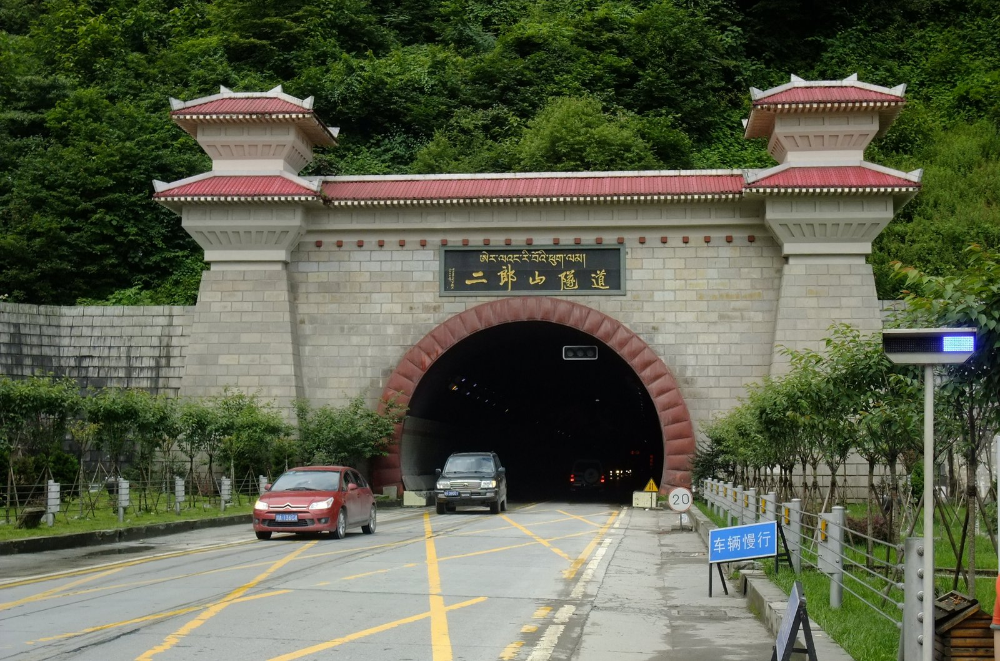
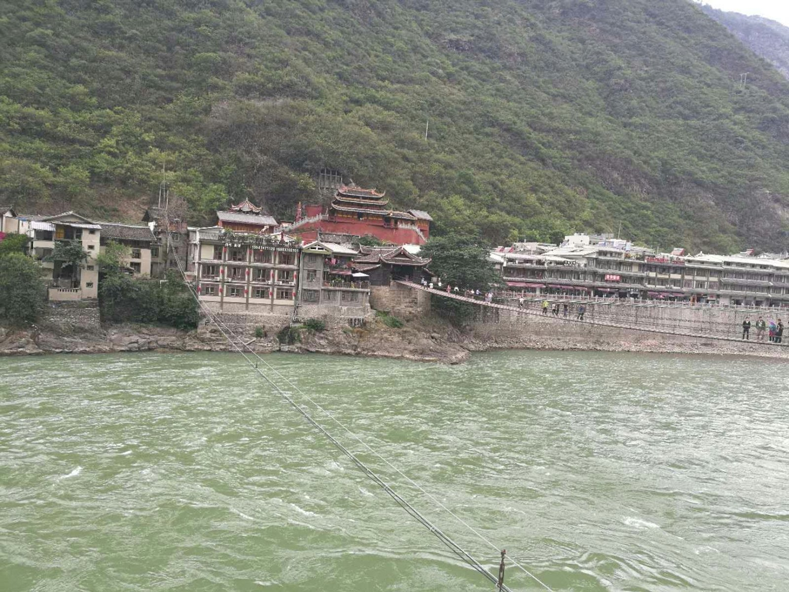
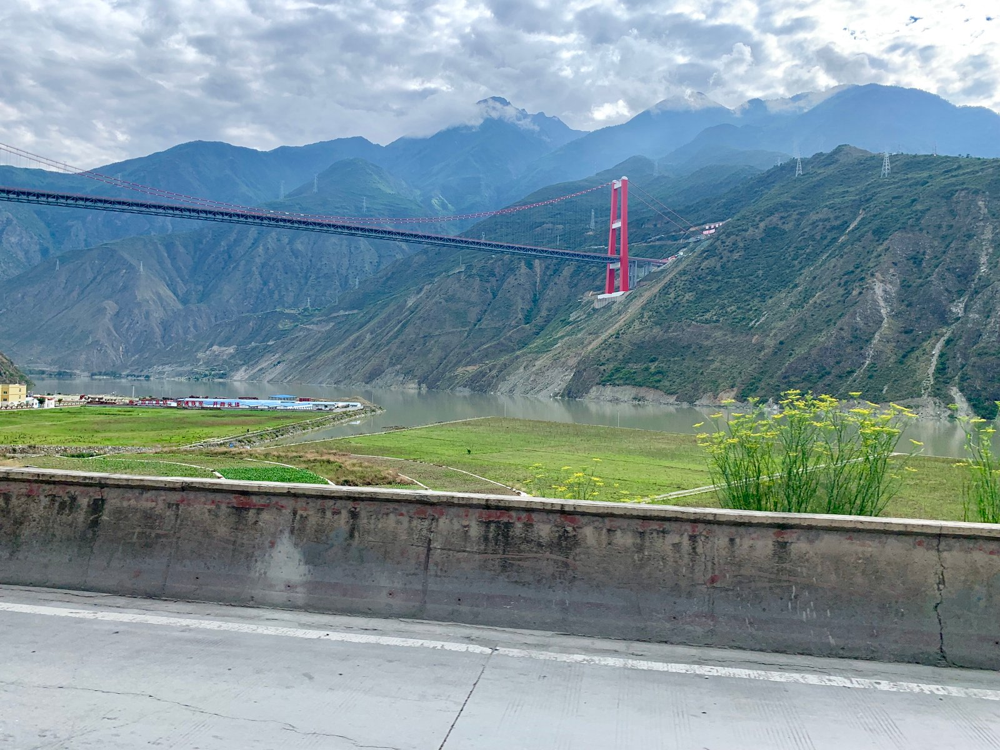
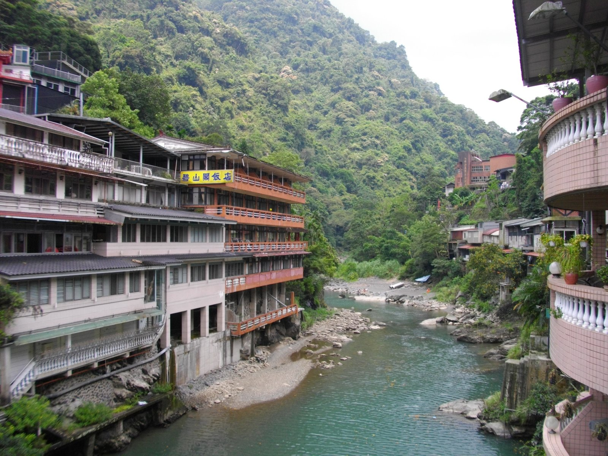
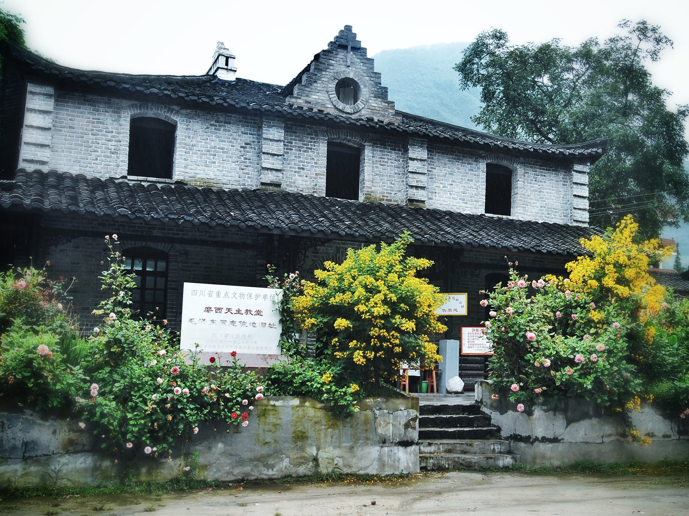
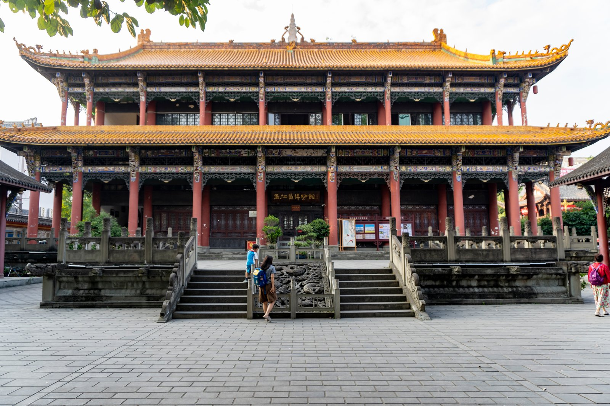

温江 → 雅西高速 → 雅康高速 → 泸定 → 磨西镇
穿越二郎山隧道，沿途欣赏大渡河峡谷风光，抵达海螺沟花水湾温泉酒店。
去程走雅康高速，返程走康定
穿越二郎山隧道，沿途欣赏大渡河峡谷风光，抵达海螺沟花水湾温泉酒店。
沿康定返程，沿途牛羊，猴子，马，川西风光尽收眼底。
温江出发 → 泸定桥 → 伞岗坪 → 海螺沟花水湾温泉酒店
从温江上成温邛高速，经雅安、天全，穿越二郎山隧道（隧道内灯光秀很震撼，隧道外就是绝美峡谷风光）。出隧道后海拔逐渐升高，沿途是大渡河峡谷风光，天气好能看到云海。

全长8600米，穿越海拔2170米的二郎山，隧道两侧气候迥异，被誉为“阴阳两重天”
抵达泸定县城，导航“李豆花饭店”。这家藏在角落里的老字号，主打地道川菜，豆花必点，蘸水很香。还有凉拌牦牛肉和炒时蔬解腻。
吃完饭导航去“泸定桥景区”，停车建议停在飞夺泸定桥纪念馆地下停车场。走在13根铁链组成的桥上，脚下是奔腾的大渡河，非常震撼。过桥后走到西岸（观音阁一侧），是拍摄泸定桥全景的最佳机位。纪念馆免费，需身份证。

始建于清康熙四十四年（1705年），全长103.67米，由13根铁链组成，因“飞夺泸定桥”闻名中外
导航“伞岗坪自驾营地”或“咱里村”，距离县城几分钟车程。这里是看兴康特大桥（网红大渡河大桥）最好的位置，桥就在头顶，非常壮观。有草坪、观景台，被称为“318最美起点”，适合拍一张“此生必驾”的打卡照。

紧邻雅康高速兴康特大桥，可“上观桥、中赏花、下看湖”，有房车营地和观景栈道
车程约50-60分钟（约50公里）。抵达磨西镇后，先去酒店办理入住。磨西镇上有很多餐馆，推荐吃牦牛火锅或雅鱼。开心烧烤，牛肉汤锅很好吃，烤鸡味道也不错。
酒店的特色是硫磺温泉，泡完皮肤很滑。如果天气好，晚上在酒店院子里有机会看到贡嘎雪山的星空，非常美。

私汤房房间自带专属温泉泡池，水质优良，私密性极佳
📍 四川省甘孜州泸定县磨西镇共和村二组50号
📞 18227489287 / 17323059735
🏔️ 主打私汤房和天然硫磺温泉，温泉水质很好，泡完皮肤滑溜
🅿️ 免费停车场 | 🛁 免费温泉 | 🏊 室外泳池 | 🍵 茶室
海螺沟 → 燕子沟-雅家情海 → 康定 → 雅安 → 温江
早起在酒店房间阳台或磨西镇远眺贡嘎雪山的日照金山。如果想进海螺沟景区看大冰川，建议早上8:30前出发去售票处排队坐观光车（进沟要排队）。如果不想进景区，可以在磨西镇周边的彩虹桥或冰川森林公园门口的河谷走走，风景也很不错。
海拔6618米，从磨西镇可远眺爱德嘉峰等贡嘎卫峰，日出时日照金山极为壮观
在磨西古镇吃早餐，品尝藏香猪、酥油茶、青稞饼等特色美食。古镇是川藏茶马古道重镇，可以逛逛老街，感受历史韵味。10点左右启程返程。

沉淀着多元文化，可逛红军长征陈列馆、贡嘎山自然资源博物馆，品尝藏香猪、酥油茶
如果时间充裕，返程时可以在伞岗坪再停一次，换个角度拍兴康特大桥。或者在烹茶村逛逛，看看大渡河峡谷的午后风光。
经雅安、成温邛高速返回温江，约17:00-18:00抵达，不耽误周一休息。如果还想放松一下，可以去温江鲁家滩湿地公园，开阔的水面遥望龙门山脉，看个日落吃顿鱼，完美结束旅程。

开阔水面，天气好时能“推窗见雪山”，适合回程后发呆、看日落
沿途地道风味，不容错过
老字号川菜馆，藏在角落里的老店，距离泸定桥不远。豆花必点，蘸水很香。
招牌豆花凉拌牦牛肉炒时蔬磨西镇上很多餐馆都提供牦牛火锅，藏汉融合的经典，肉质紧实，汤底鲜美。
牦牛肉炖土豆磨西烤鸡腊肉野菜古镇老街上的藏式美食，酥油茶、青稞饼、藏香猪，感受茶马古道的味道。
酥油茶青稞饼藏香猪去程雅康高速 · 返程康定
出发前必看
8月是川西雨季，雅安到泸定段多山路段，请关注天气预报，避免暴雨天出行引发滑坡风险。返程走G350国道，路宽但需注意避让大型货车。
高原紫外线强，一定要涂防晒；虽然有温泉，但早晚空气干燥，记得带润唇膏和保湿霜。
磨西镇海拔约1600米，一般不会有高反，但温差大，请备好厚外套。早晚泡温泉时注意保暖。
海螺沟景区门票和观光车票建议提前在美团或大麦上预订。泸定桥门票5元。返程G350国道免费通行。
二郎山隧道内无信号，提前下载好离线地图。沿途加油站和便利店在泸定县城和磨西镇比较方便。
花水湾到海螺沟的盘山路弯道较多，请注意控制车速。返程G350国道车少路好开，但毕竟是山路，谨慎驾驶。